Jammu and Kashmir
A Union Territory
Jammu and Kashmir was a region formerly administered by India as a state from 1954 to 2019, constituting the southern and southeastern portion of the larger Kashmir region, which has been the subject of a dispute between India, Pakistan and China since the mid-20th century. The highlighted region of this state were parts of the former princely state of Jammu and Kashmir, whose western districts, now known as Azad Kashmir, and northern territories, now known as Gilgit-Baltistan, are administered by Pakistan. The Aksai Chin region in the east, bordering Tibet, has been under Chinese control since 1962.
After the Government of India repealed the special status accorded to Jammu and Kashmir under Article 370 of the Indian constitution in 2019,
the Parliament of India passed the Jammu and Kashmir Reorganisation Act, which contained provisions that dissolved the state and reorganised it into two union territories – Jammu and Kashmir in the west and Ladakh in the east, with effect from 31 October 2019. At the time of its dissolution, Jammu and Kashmir was the only state in India with a Muslim-majority population.
Jammu and Kashmir came into being as a single political and geographical entity following the Treaty of Amritsar between the British Government and Maharaja Gulab Singh signed on March 16, 1846. The Treaty handed over the control of the Kashmir State to the Dogra ruler of Jammu who had earlier annexed Ladakh. Thus a new State comprising three distinct religions of Jammu, Kashmir and Ladakh was formed with Maharaja Gulab Singh as its founder ruler. The feudal dispensation in the State, however, was too harsh for the people to live under and towards the end of a hundred years of this rule when their Indian brethren were fighting for independence from the British under the inspiring leadership of Mahatma Gandhi and Pandit Jawahar Lal Nehru, the Kashmiris led by a towering personality, the Sher-I-Kashmir Sheikh Mohammad Abdullah, rose against the autocracy. The autocratic rule came down heavily on the people’s freedom movement. However, the people laid their lives in the cause of freedom and to uphold the ideals of secularism, equality, democracy and brotherhood.
The high point of the movement was July 13, 1931 when 22 protesters were martyred. The event strengthened the movement and contrary to the expectations of the then rulers, the peopled emerged more determined in their resolution to seek an end to autocratic rule. By the time the rulers could realise the futility of breaking the will of the people with the might of the State, the National Conference, headed by Sheikh Mohammad Abdullah, had become a mass movement and a force to reckon with. It broke the barriers of region and religion and became a popular and secular voice of the people of the State whose collective yearning was freedom from autocracy and the establishment of a popular rule. The people’s movement spearheaded by the National Conference saw several ups and downs with its leaders particularly the Sher-I-Kashmir suffering vicissitudes and long internment.
Accession
Jammu and Kashmir was one of about 565 princely States of India on which the British paramountcy lapsed at the stroke of midnight on August 15, 1947. While the power was transferred to the people in British India, the rulers of the princely States were given an option to join either of the two Dominions – India or Pakistan.
The Government of India Act 1935, as adopted in the Indian Independence Act, 1947, provided, "An Indian State shall be deemed to have acceded to the Dominion if the Governor General has signified the acceptance of an Instrument of Accession executed by the rule thereof." India, Pakistan and even Britain were party to these provisions. So the choice of joining either of the Dominions was left to the Rulers of the States concerned. Moreover, in the Indian Independence Act, 1947, there was no provision for any conditional accession.
The Ruler of Jammu and Kashmir, Maharaja Hari Singh did not exercise the option immediately and instead offered a proposal of Standstill Agreement to both the Dominion, pending final decision on State’s accession. On August 12, 1947, the Prime Minister of Jammu and Kashmir sent identical communications to the Government of India and Pakistan which read, "Jammu and Kashmir Government would welcome Standstill Agreement with Union of India/Pakistan on all matters on which there exists arrangements with the outgoing British India Government." Pakistan accepted the offer and sent a communication to J&K Prime Minster on August 15, 1947. It read, "The Government of Pakistan agrees to have Standstill Agreement with Jammu and Kashmir for the continuation of existing arrangements …” India did not agree to the offer and advised the Maharaja to send his authorized representative to Delhi for discussion on the offer.
The Story behind it is given below in this link.
Click here
to know more about history of jammu and kashmir
Culture and Tradition
Ritirivaz
.jpg)
.jpg)
The Vedic art and culture grew in Kashmir, and some early Vedic hymns were composed in Kashmir. The Bharata Natya Shastra is notable as an ancient encyclopedic treatise on the arts one which has influenced dance, music and literary traditions in India, originated in Kashmir. Patanjali of 2nd century BC compiled his compendium on Yoga in Kashmir. The Panchatantra is also said to be originated in Kashmir. At the time when Pali was primary language for Buddhist literature in rest of India, all the Buddhist literature produced in Kashmir was in Sanskrit. Kashmiri women hold high status in society as Bilhana records that Kashmiri women were fluent both in Sanskrit and Pali.Kosh Shastra, a work on science of sex, second to Kamasutra was developed in Kashmir.
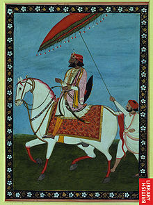
Dogra cuisine
Wheat, maize and bajra are staple food besides rice, cereals and a tangier preparation made out of mango or tamarind popularly known as maani. The whole dish is called dal puth maani and is savoured as a combination. Mitha madra is a favourite and is cooked from milk, dry fruits, and semolina. Preparations of rajmash (a special variety of red kidney beans); auria a dish of curd fermented by rye; ambal made from pumpkin, jaggery and tamarind are favourites, especially during ceremonial cooking. The expert cooks are called Siyans, usually Brahmins. Kalari is a milk preserved by cogulation of proteins and then fried in a pan to make it delicious.
Non-vegetarian food was limited to Rajputs and Vaish (Mahajans). 'Khatta meat' is mutton cooked with sour pomegranate seeds (Anardana) or lime juice and flavoured with fumes of a burning charcoal soaked in mustard oil. Keur is one of the well known foods of Dogras. It is prepared by flour and butter and served with sugar and curd. Mostly, it is served to bridegroom at the time of marriage by the in-laws. Kalaari is a favourite food of Dogras in the rainy season. It is prepared by flour mix, cottage cheese and milk cream (malai) with water with help of a small cup shaped pot. Kalari is served with milk. Kalari cheese is popular in the Jammu region and in Jammu and Kashmir state more generally. Babbru/pathoru are prepared with flour and fried in mustard oil. Babbru is served with maani/potato/kheer/curd.
Kheer is a dish prepared from milk by adding some rice and dry fruit in it. It is served at all the special occasions and festivals. Another popular exotic dish is guchiyyan (dried black morel), usually added as an ingredient in pulao. As it grows naturally in forests and cannot be cultivated, it is a priced commodity (approx 500 Rs. per 100 g) and makes an excelled dish with mountain potatoes (pahadi aloo). Saffron or kesar is extensively used to flavour sweet dishes and for its anti-oxidant benefits.
Costumes of Jammu and Kashmir are well known for their embroidery and intricate designs, which reflect the richness of the culture and landscape of the region. The form of clothing is designed to counter the cold climate of the region. Most of the garments are made of wool, silk designed with intricate embroideries and cotton.
The Pheran is the prominent attire for Kashmiri women. The Pheran is worn by women usually has Zari, embroidery on the hemline, around pockets, and mostly on the collar area. Ladies prefer a suit and Burgha in summer and Pheran are preferred in autumn.
The typical dress of a Kashmiris man both Hindu and Muslim is Pheran, a long loose gown hanging down below the knees. The men wear a skullcap, a close-fitting shalwar (Muslims), or churidar pyjama (Pandits).
Due to Kashmir’s close proximity to Central Asia, Eastern Asia, and Southern Asia, a unique blend of music has evolved encompassing the music of the three regions.
But, overall, Kashmiri Valley music is closer to Central Asian music, using traditional Central Asian instruments and musical scales, while music from Jammu is similar to that of North India and Ladakhi music is similar to the music of Tibet.
The Dumhal is a famous dance in the Kashmir valley, performed by men of the Wattal region. The women perform the Rouff, another traditional folk dance.
Click here
to know more about culture of jammu and kashmir
Food
Modur-pulaoll
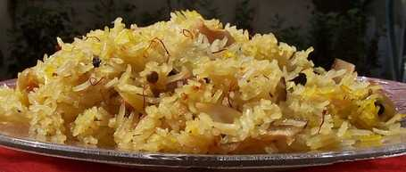
Modhur Pulav is the name given to sweetened Kashmiri rice prepared using cinnamon, a little saffron, milk, ghee,
sugar, cashew nuts, almonds, green cardamom among several other ingredients. This dish is sweet, flavoured and healthy with saffron as the main spice which gives it beautiful colour and taste. And this saffron is also grown and in Kashmir itself. The distinctive taste of this pulav is unlike something you?ve ever tasted before. Just taste once and you will be left craving for more.
Rajma chawal
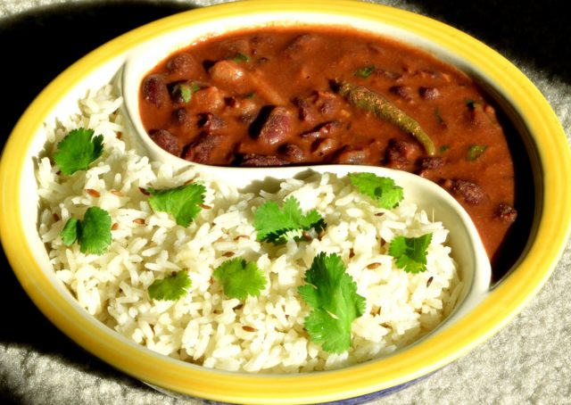
What is it
: Red kidney beans or rajma curry served with rice. The sweetness of kidney beans are exclusive to Jammu, hence the dish is quite a popular one.
What does it taste like
: Spices like chili and turmeric powder along with onions and tomatoes make this main dish a delectable one. The mild aroma that it imparts is a result of using fresh coriander leaves.
Dum Aloo

What is it
: Aloo or potatoes cooked with spices. Since this dish was originally consumed by Kashmiri Pandits, it was initially prepared without garlic and onions.
What does it taste like
: The yogurt based gravy has a rich yet subtle taste of spices like garam masala, cumin, fennel seeds, cardamom and other spices. Hot parathas go well with this preparation.
Kaladi kulcha
Mozzarella like cheese made from goat or cow milk and served with kulchas or bread and garnished with cooked vegetables. This dish owes it origin to Udhampur of Jammu.
What does it taste like
: The spongy blob creates a heavenly taste when associated with condiments or chutney, like chili or garlic chutney.
Click here
to find many more mouthwatering delicacies.
Tourism
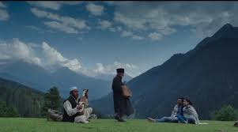
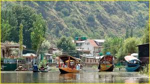Gulmarg
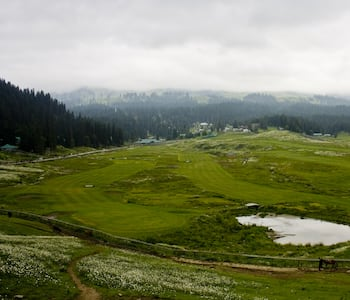
Twisting undulations, vibrant flower blooms, pine-fringed hillocks and the outstanding backdrop of Western Himalayas make Gulmarg a paradisiacal place to tread in. Rightly termed as the ‘Meadow of Flowers,' this erstwhile summer resort of British India is a place to experience the prodigious splendidness of nature. The spanking pulchritude of this extraordinary snowscape attracts visitors from all around the world, year-round. Besides harping on its scenic flair, Gulmarg also boasts the enthralling escapades. It offers an enthralling possibility of various adventure activities like snowboarding, skiing, and high-handed hiking, to the passionate adventure junkies. \r\n\r\nTraverse along the length and breadth of this bijou town to admire its fascinating splendor. Gulmarg marks upon a distinct and contrasting entity of historic colonial rule and independent modernism. This fragile ecosystem represents its ethnicity through the vivid festivities and culture fairs. The vivacious Gulmarg Gondola almost touches the shoulder of the snow-capped Mt. Apharwat and provides a sweeping view of this couthy hamlet. Other than being an elemental love-setting for the reel-life duo, Gulmarg is truly an incredible romantic retreat for the real-life twosome.
Pahalgam
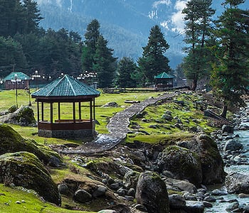
The quaint town of Pahalgam is a scenic paradise, located in the state of Jammu and Kashmir in India, is adorned with a blanket of pine, cedar and conifer trees, surrounded by imposing mountain ranges, blessed with crystal-clear rivers Lidder and Seshnag, Pahalgam looks like a surreal portrait. Hundreds of miles away from the hustle and bustle of city life, Pahalgam serves as a delightful retreat for all, from adventure junkies to religious people.\r\n\r\nEnjoy a pony ride atop the steep hills or undertake a thrilling trek from Aru. Be mesmerized by the vastness of the snow-capped Kolahoi Glacier. You can also visit the nearby Amarnath Temple dedicated to Lord Shiva, attracting thousands of devotees annually. Betaab Valley is also a must-visit place, and interestingly, the valley is named after a Bollywood movie which was shot there. Pahalgam also offers a host of adventure and sports activities, such as river rafting, skiing, and golf. Experience the warm hospitality of the locals and get a chance to experience their simple lifestyle. Apart from its beauty, other aspects that add to the allure of the ‘Valley of Shepherds’ are its people, cuisine, and culture.
Vaishno Devi
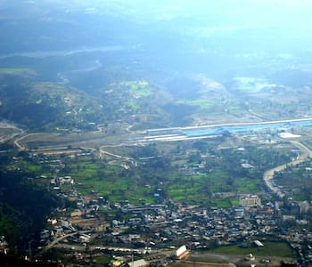
Located amidst the picturesque Trikuta Mountains of Jammu and Kashmir in India, lies the holy shrine of Mata Vaishno Devi. The temple is revered by many and is visited by millions of pilgrims each year. It is believed that the Goddess fulfills whatever her devotees wish for.\r\n\r\nThe holy cave is located at an altitude of 5200 feet above sea level. Pilgrims start their journey from the base camp of Katra and undertake a challenging trek of nearly 13.5 km. The trek is challenging, yet exciting at the same time. Scores of pilgrims joyfully chant the slogan of ‘Jai Mata Di’ and sing ‘bhajans’ (songs devoted to the Goddess). The pilgrims consist of men, women, and children of all ages, people belonging to various cultures, regions and speaking different tongues, united by their common devotion towards Mata Vaishno Devi. With time, the amenities offered to the tourists have improved considerably. If trekking does not appeal to you, you can choose between a helicopter ride, an exciting pony ride and other such modes of transport. The stretch is dotted with shops and restaurants, where you can relax before continuing your journey.
Nubra
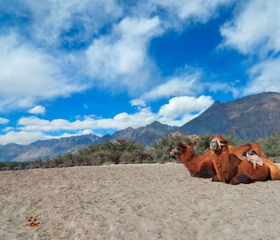
Nubra Valley, located to the northeast of Ladakh Valley, is often referred to as the valley of flowers. It is a popular destination for tourists especially those who look for trekking opportunities. There are also several villages in the valley that are popular spots for tourists to visit. Diskit is well known for its delicious apricots. There is also a monastery in Diskit that is 350 years old. The road that connects Diskit to the village of Hunder is a popular road to take for tourists as they hope to glimpse the Bactrian camels that roam around here. \n\nHunder is home to an ancient monastery with beautiful frescos as well as a statue of Buddha. Panamik is a picturesque little village. In addition to beautiful views, a hot water spring present in the village draws several tourists to visit. Overall, Nubra offers tourists an adventurous holiday while being surrounded by natural beauty.
Patnitop
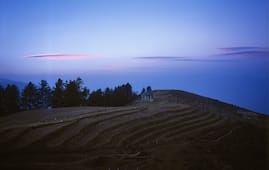
Located in the Udhampur District of Jammu, India, Patnitop is a beautiful hill station with scenic surroundings and picturesque locations. In the background, the Himalayan Range makes the view absolutely breathtaking. The perfect weather conditions make this place a popular destination for skiing, during the winter season, which attracts tourists from all around the country. Several national level skiing events and competitions are also organized here. The soothing weather adds to the mesmerizing beauty of this hill station throughout the year. \r\n\r\nExperience the diversity of religions and cultures in this town, where the inhabitants live together in harmony and participate in each other’s festivities and merriments. A small town that it is, Patnitop has residents who find happiness in the little joys of life. Interact with the locals and learn about their exquisite art and culture, which they take pride in sharing. Try their delectable cuisine, rich, spicy, meaty delights, with a delicate essence of their famous saffron and savor the lip-smacking flavors. This little gem of Kashmir most definitely gives you a paradisiacal feeling to be in. Plan a visit to this resplendent hill station and admire the splendid landscape.
Udhampur
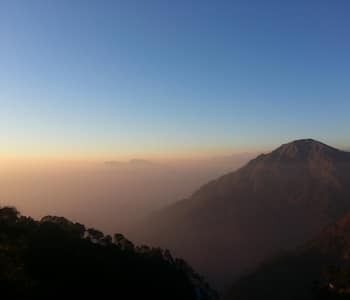
The second largest city within the Jammu division of the state of Jammu and Kashmir. Udhampur is a lush green area replete with eucalyptus forests. This city is the district capital of the Udhampur district and is a strategically important city for India as it sits close to the Pakistan border and thus, the Northern command headquarters for the Indian military is based out of there. To support the troops, the Forward Base Support Unit, which is an arm of the Indian Air force, is also situated here which operates out of the Udhampur Air Force Station. \n\nHowever, Udhampur also has many places of interest in and around the city to explore. The Kiramchi temples located on the Udhampur-Jammu highway are a particular attraction in Udhampur along with other temples in the region such as the Chountra Devi, Babore Temples, Pingla Devi, and places of heritage such as Ramnagar Fort, Sheesh Mahal, and many others.
and there are many more places to visit in jammu and kashmir
Click here
to know more about travel places in jammu and kashmir.
Ancient Forts and Palaces
Akhnoor Fort
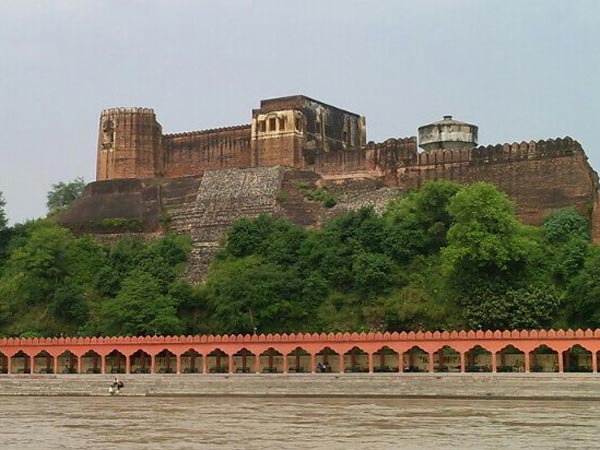
Placed in the historic town on the Jammu Poonch Highway along the banks of the beautiful River Chenab at the height of 988 feet above sea level. This ancient fort plays a significant role in the history of this town. Mian Tej Singh laid the foundation of this fort in 1762 AD and completed in 1802 AD by Raja Alam Singh. The fort offers breathtaking views of the Trikuta Mountains, the Shivalik Ranges, and the lush green environment. The palace features a double storey that is separated by a wall. There is also a beautiful courtyard, with the walls decorated with ancient arches and murals.
Bahu Fort
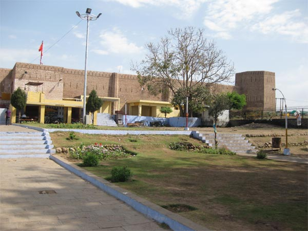
The Rajput King, Bahu Lochan built this historic fort almost 3,000 forts ago. This iconic fort features in the great marvels of Jammu. Restored and revamped several times by the Dogra Dynasty, the Bahu Fort is placed on the Tawi River overlooking the Jammu city and features beautiful waterfalls in its neighborhood. The terraced space is further enhanced with the colorful and vibrant flowers. The ancient fort is a favorite pilgrimage spot for the Bahu Temple that is inside the premises of the fort. Several devotees come to the temple to offer their prayers and sacrifice.
Chiktan Fort
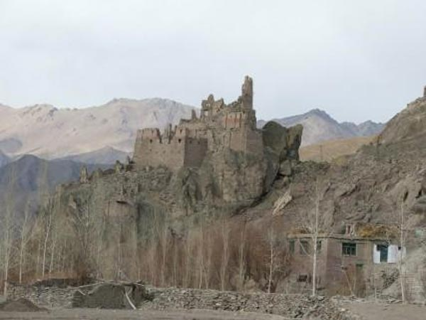
Fondly referred as the Chiktan Khar, the Chiktan Fort is situated in the Chiktan village of the Kargil district in Jammu & Kashmir. Balti artisans built this royal castle in the 16th century, and it has served as a royal residence for various rulers that ruled in the region. Reduced to an ancient ruin today, Chiktan Fort still carries the essence and charm of a historic fort with its mud and stone masonry. Placed inside a deep valley on the banks of the Indus River, with the majestic mountains decorating its backdrop. Timber was used to support the ceilings of the structure and also as door and window frames.
Bhimgarh
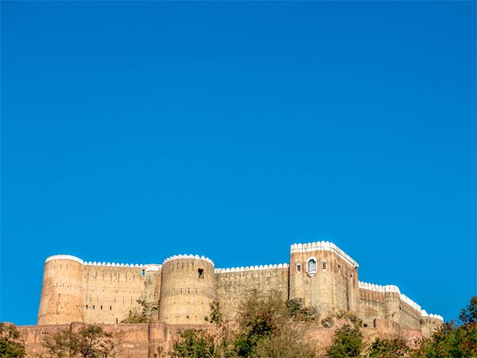
Often referred as the Reasi Fort, the Bhimgarh Fort is placed in the quaint town of Reasi in the Northwest part of the Jammu city. The Dogra rulers used this place to take cover during an emergency. Maharaja Gulab Singh rebuilt this fort using stones, and it took more than 30 years to complete the fort. The entrance is decorated with Rajasthani carvings from Baluka stone. There is a giant statue of Lord Hanuman and Goddess Mahakali at its entrance. The fort also houses a temple, a pond, and many rooms.
Ramnagar Fort
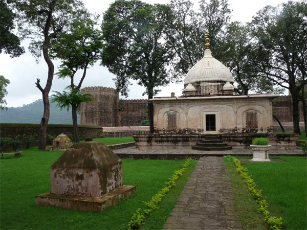
Popularly referred as the Purana Mahal, the Ramnagar Fort was built by Raja Suchet Singh in 1844 A.D. Placed in the neighborhoods of the Sheesh Mahal, famous for the Sati puja performed by his wife. This site has transformed into the Samadhi of the Maharani. Elevated at the height of almost 828 meters above sea level, the fort nestled amidst green hilly environments from all corners. The stunning wooden ceilings and walls decorated with floral designs and stucco paint are delightful to watch. One can only commute using a narrow bridge to reach this fort.
Click here
to know more about incredible forts of jammu and kashmir.